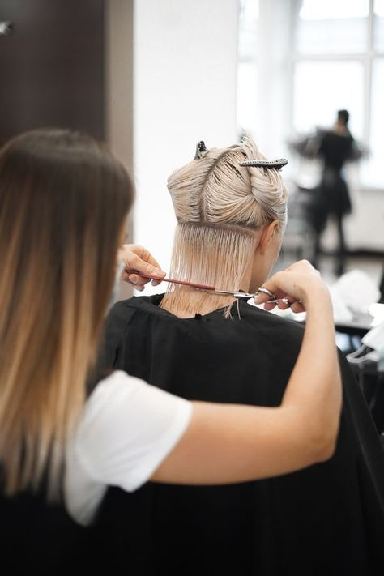
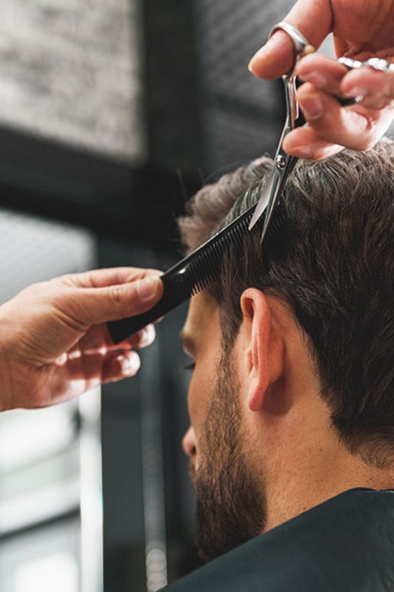
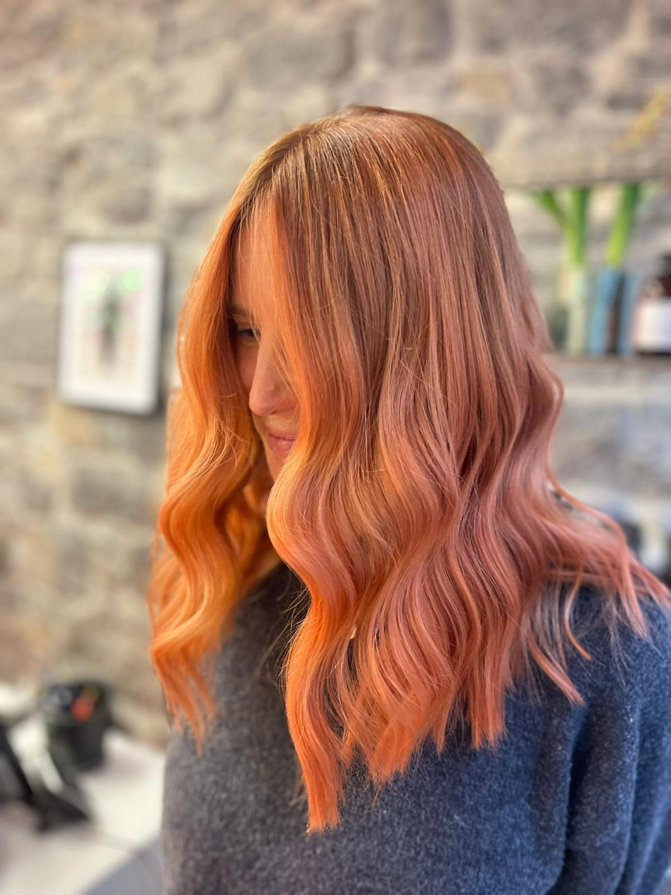
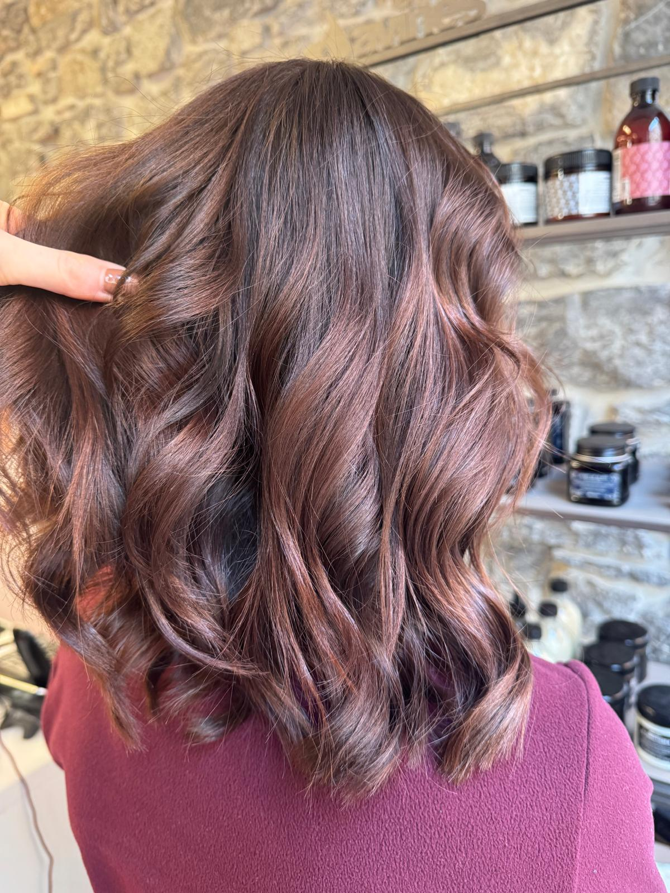
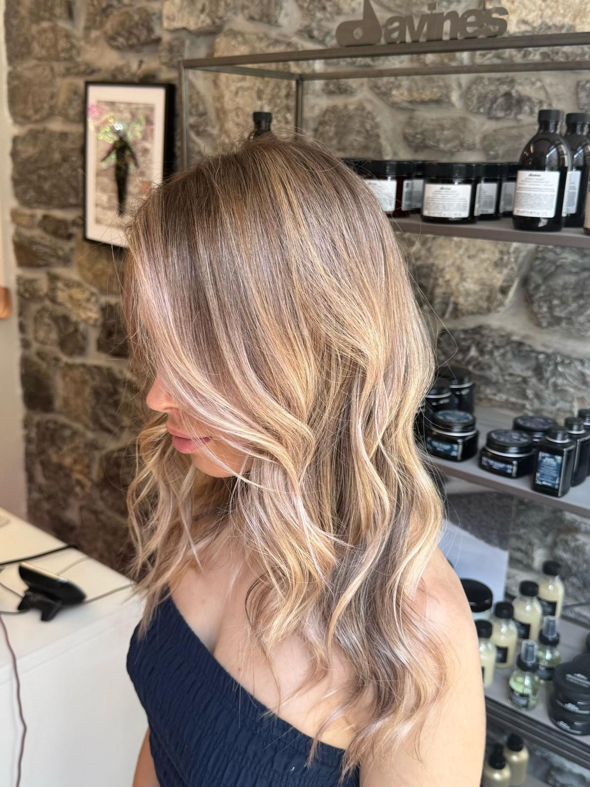
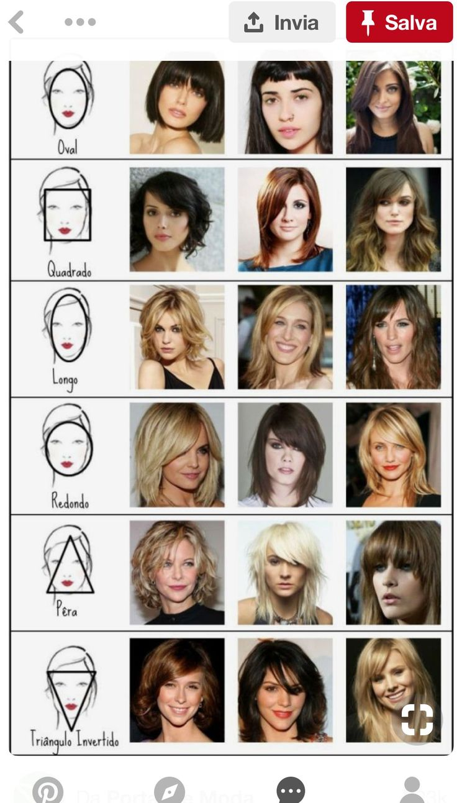

Chez FR Coiffure, chaque coupe est une signature. Nos stylistes analysent votre morphologie, votre mode de vie et vos envies pour créer une coupe sur-mesure qui vous ressemble vraiment.

Du carré court au long dégradé, nos stylistes maîtrisent toutes les techniques pour sublimer votre féminité. Chaque coupe est pensée selon votre morphologie et vos envies.

Dégradés précis, contours nets, textures modernes — nous taillons votre style avec rigueur. De la coupe classique au look contemporain, chaque détail compte.
Pour un événement, une occasion spéciale ou simplement vous faire plaisir, notre équipe crée des coiffages élaborés qui mettent en valeur votre beauté naturelle.




Contactez-nous pour réserver votre consultation coupe à Genève Plainpalais.